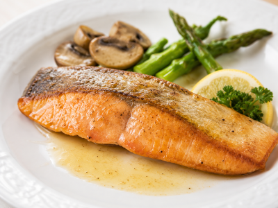
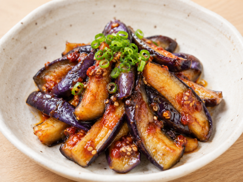
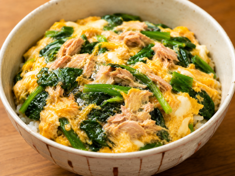

材料少なめレシピ
少ない材料で手軽に作れる、簡単レシピです。
目次
鮭のムニエル

材料（1人分）
- 生鮭 1切れ
- 塩・こしょう 少々
- 小麦粉 大さじ1
- バター 10g
作り方
- 鮭の水気を拭き、塩・こしょうを振る。
- 小麦粉を薄くまぶす。
- フライパンにバターを熱し、鮭を皮目から中火で3〜4分焼く。
- 裏返して2〜3分焼き、中まで火が通ったら完成。
ポイント
仕上げにレモンを絞ったり、乾燥パセリを振るとさっぱりおいしく食べられます。
なすの唐辛子みそ和え

材料（1人分）
- なす 1本
- 味噌 大さじ1
- 砂糖 小さじ1
- ごま油 小さじ1
- 豆板醤 小さじ1/2（お好みで調整）
作り方
- なすは乱切りにする。
- フライパンにごま油を熱し、なすを中火で4〜5分炒める。
- 味噌・砂糖・豆板醤を混ぜ合わせ、フライパンに加えて全体に絡める。
- 1分ほど炒めたら完成。
ポイント
仕上げに白いりごまや小ねぎを散らすと、香ばしさと彩りが良くなります。
ほうれん草とツナの卵とじ丼

材料（1人分）
- ご飯 1杯
- ほうれん草 1/2束（約100g）
- ツナ缶 1/2缶（約35〜40g）
- 卵 1個
- めんつゆ（2倍濃縮）大さじ2
- 水 大さじ2
作り方
- ほうれん草は4〜5cm幅に切る。
- フライパンに水とめんつゆを入れて熱し、ほうれん草とツナを加えて2〜3分煮る。
- 溶き卵を回し入れ、半熟になったら火を止める。
- ご飯にのせて完成です。
ポイント
ツナ缶は油ごと使うとコクが増し、水煮ならさっぱりと仕上がります。